Salesforce
Salesforce is a best-of-breed cloud customer relationship management app, enabling organizations to easily manage and track leads, contacts and opportunities. It is built on the Force.com platform, and can be readily extended with an expansive range of third-party marketplace apps and other Salesforce products that encompasses sales, marketing, customer service and commerce.
API version
The Salesforce connector uses Salesforce REST API.
Supported editions and versions
The Salesforce connector works with all Salesforce cloud instances, e.g. Professional, Enterprise, Unlimited, and Developer
It also works with Force.com apps.
How to connect to Salesforce on Workato
The Salesforce connector uses OAuth2 authentication to authenticate with Salesforce.
 Configured Salesforce connection
Configured Salesforce connection
- Connection name
Give this Salesforce connection a unique name that identifies which Salesforce instance it is connected to.
- Sandbox
To connect to a Salesforce Sandbox instance, simply use the login credentials for your sandbox account and select "yes" on this field.
- Enable restricted IP
Relevant for organizations with IP whitelisting. Select yes to have all requests from Workato originate from a consistent, known IP address.
Fill in the above fields and click connect. A Salesforce connection pop-up prompts you to provide your Salesforce login credentials for OAuth2 authorization.
 Salesforce authorization pop-up
Salesforce authorization pop-up
- Username
Username to connect to Salesforce.
- Password
Password to connect to Salesforce.
Roles and permissions required to connect
Salesforce users can connect to Salesforce from Workato. We recommend that a separate user be created for integration purposes.
The connected user will have the same permissions through the Workato Salesforce connector as in Salesforce. They will be able to read and write the objects as specified in their Salesforce profile. The user profile should be setup to allow appropriate access to the requisite objects required for the recipes. The permissions can be edited via the connected user's profile in Salesforce.
API Enabled permission
The connected user's profile should be API enabled. 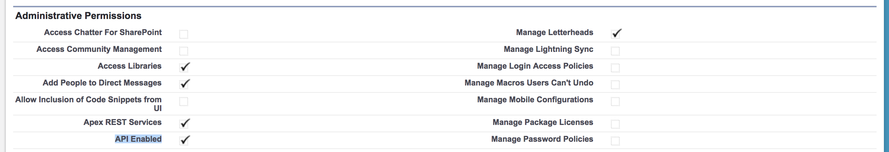 API enabled permission - profile setup
Standard and custom object permissions
To interact with an object in Salesforce, the connected user's profile needs to have permissions to read, write, edit, delete, view all, modify all for the standard object or custom object in your Salesforce organization.
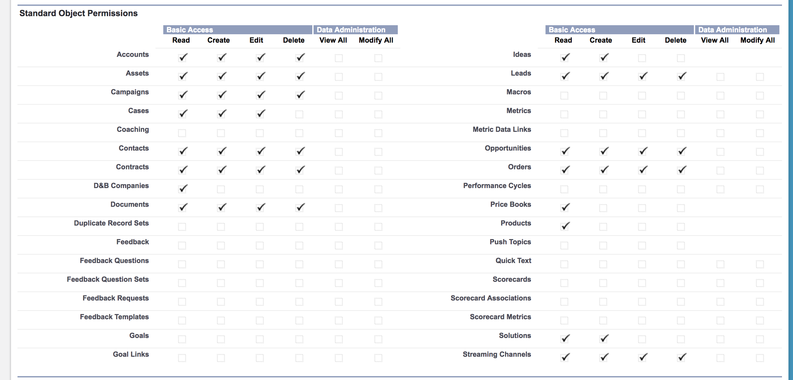 Salesforce standard object profile permissions setup
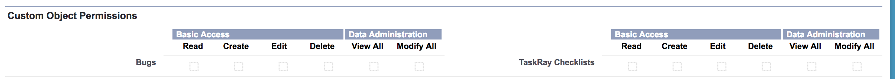 Salesforce custom object profile permissions setup
Platform event permissions
In order to use platform events triggers and actions, you need platform events to be enabled in your Salesforce organization. You would need to set read and create permissions for the connected user's profile.
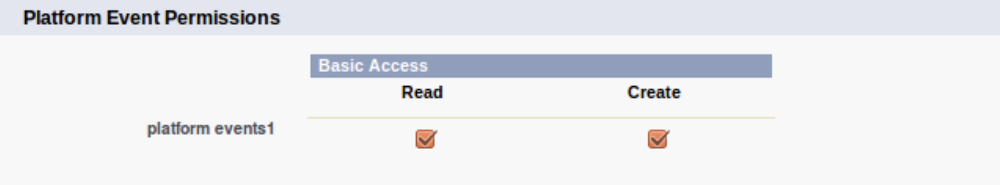 Salesforce platform events permissions - profile setup
Real-time trigger permissions
To use real-time triggers in Salesforce, workflow rules have to be set up in your Salesforce organization. These workflow rules require the Customize application permission under the Administrative Permissions tab to be setup, although the connected user does not need to be the user who sets these rules up.
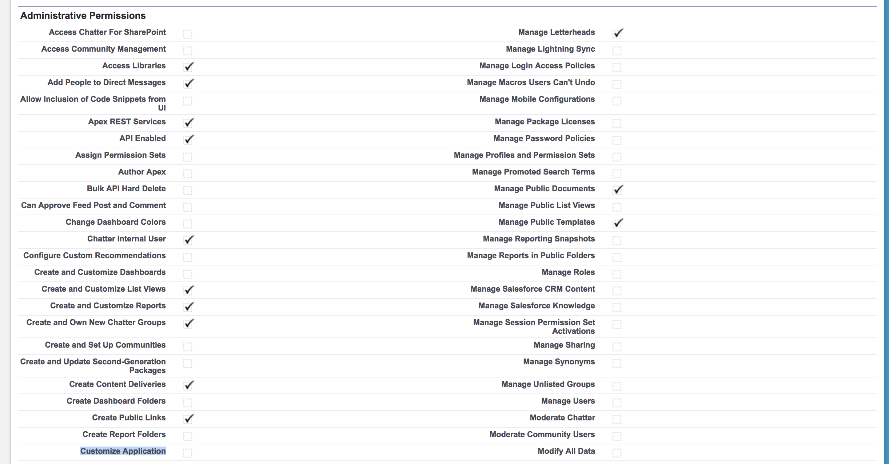 Customize application permission - profile setup
Working with the Salesforce connector
Can I connect more than one Salesforce account in a single recipe?
Yes, you may use up to 2. Simply use the Salesforce Secondary app on Workato, and you will be able to use both accounts in a single recipe. Find out more here.
Using real-time triggers
Workato offers real-time capabilities for 2 Salesforce triggers: New Object and New/Updated Object. This allows Workato to detect records created/updated in Salesforce immediately. Salesforce real-time triggers is enabled only for certain plans. Check the Pricing and Plans page or reach out to Workato sales representatives at +1 (844) 469-6752 to find out more.
These real-time triggers are powered by Salesforce workflow rules. Via these workflow rules, Salesforce monitors records for certain changes and notifies Workato immediately via an outbound message when these changes occur. These outbound messages will be received and processed by a Workato recipe as trigger events.
To set up these triggers, we need to:
- Create a Workato recipe with a Salesforce real-time trigger, and copy the generated endpoint URL from the trigger.
- Create a Salesforce workflow rule to monitor events we're interested in and send outbound messages to that endpoint URL when these events occur.
- Activate the workflow rule.
- Add trigger conditions in the recipe, if desired.
- Start the recipe.
In the following sections, we provide a detailed walkthrough to setup the real-time triggers:
Real-time trigger setup - new object
We go through the setup for the New object real-time trigger below. We will be setting up a real-time trigger for new contacts in Salesforce.
1) Select the trigger in Workato. You will be prompted to connect to your Salesforce account.
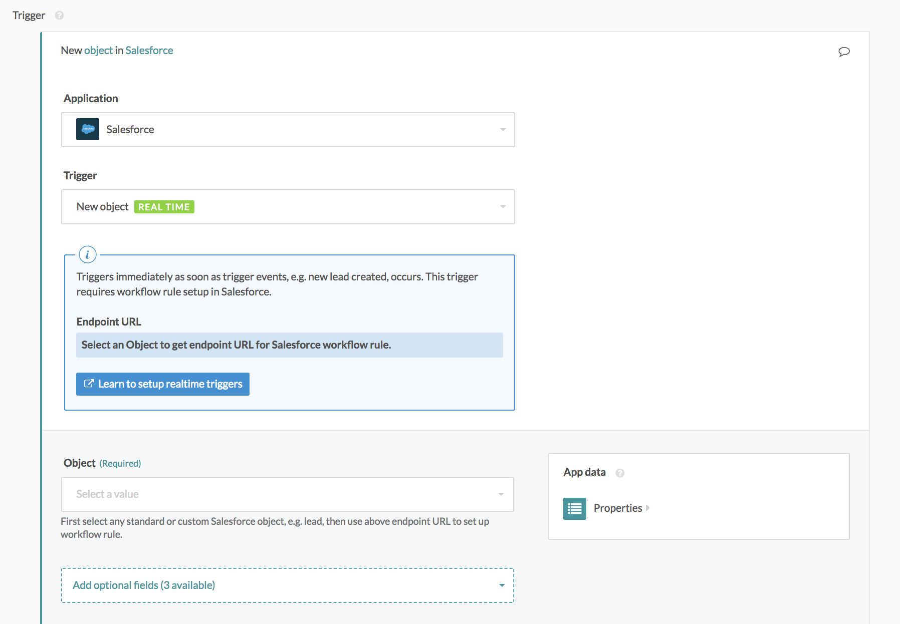 Select new object real-time trigger in Salesforce
2) Connect to Salesforce.
3) Select the specific object you wish to monitor in Salesforce. In this case, we'll select Contact.
Select specific object to monitor in Salesforce
The trigger will provide you with an endpoint URL to setup a Salesforce workflow rule with. This URL will tell Salesforce to send real-time events about newly created contacts to this Workato recipe. Copy this URL to the clipboard for use in creating the Salesforce workflow rule.
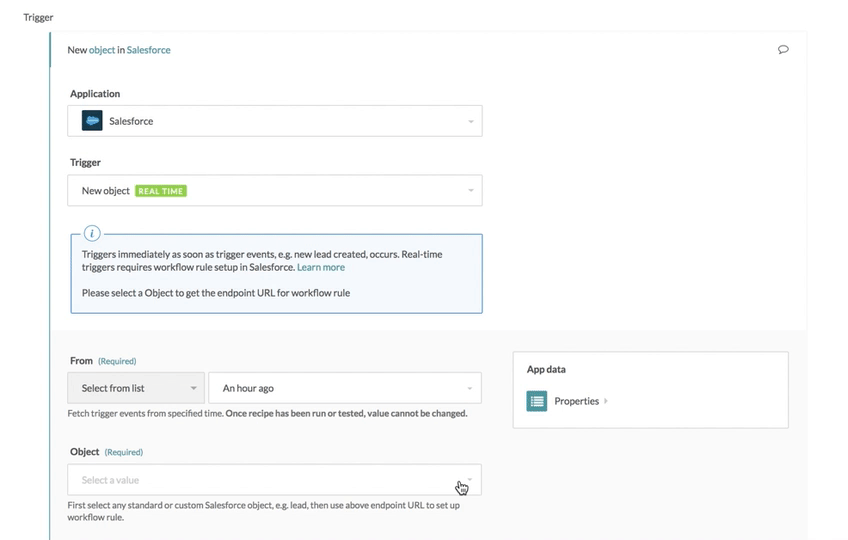 Workato generates endpoint URL for Salesforce workflow rule
This endpoint URL is unique to the Salesforce organization connected to the trigger, the Salesforce object you've selected, and the Workato recipe. You will need to regenerate this endpoint URL again if you decide to change Salesforce connection, the Salesforce object monitored, or the Workato recipe.
4) Go to your Salesforce organization and click on Setup. Go to Create > Workflow & Approvals > Workflow rules and click on New rule to create a new workflow rule. This will bring you into the Salesforce workflow rule setup wizard.
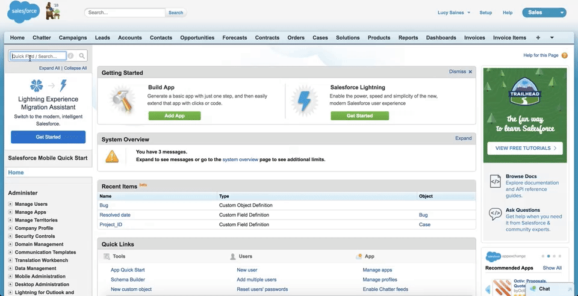 In your Salesforce organization, go to Setup>Create>Workflow & Approvals>Workflow rules and click on New rule
5) In step 1 of the setup wizard, select the same Salesforce object you have selected in the recipe.
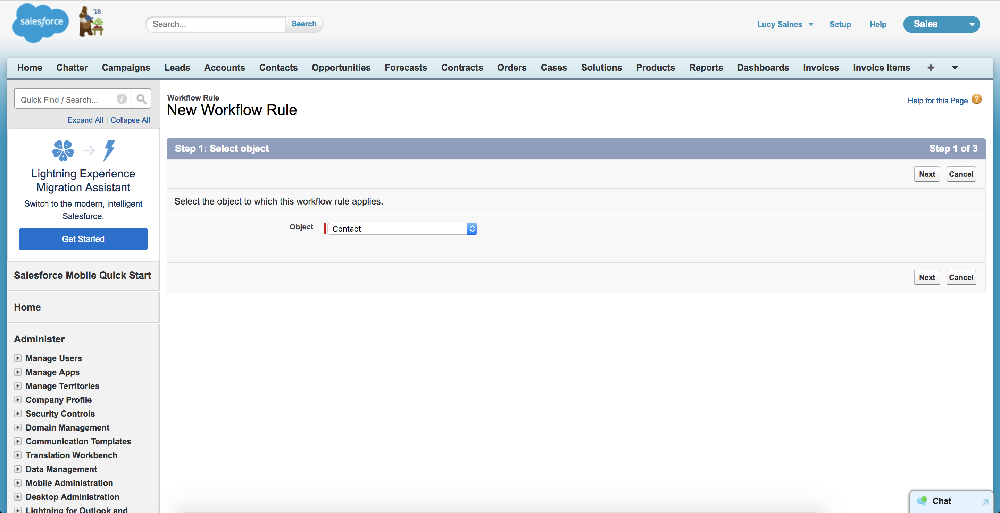 Select specific object to monitor in Salesforce
6) In step 2 of the setup wizard, set the workflow rule to be evaluated every time a record is created. We set the rule criteria to be Created Date not equal to null. Because no record will ever have a null date for the field Created Date, this ensures that the workflow rule will always be triggered when a record is created.
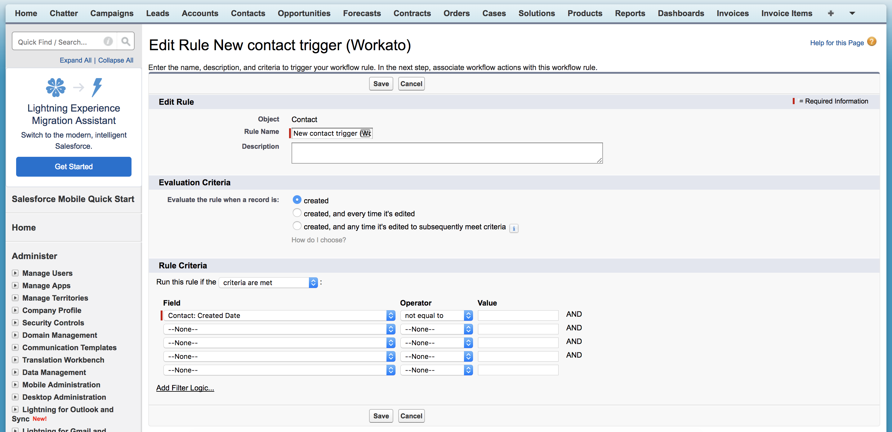 Setup the Salesforce workflow rule to be evaluated when record is created
7) In step 3 of the setup wizard, add a workflow action "New outbound message". This ensures that Salesforce will always notify our Workato recipe whenever a record is created, via sending an outbound message to that recipe's endpoint URL.
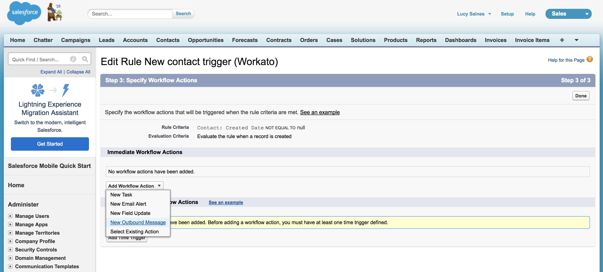 Add outbound message as the workflow action. Newly created contacts that meet the evaluation criteria will send an outbound message
8) Set up the outbound message using the endpoint URL we copied in Step 3, and save it.
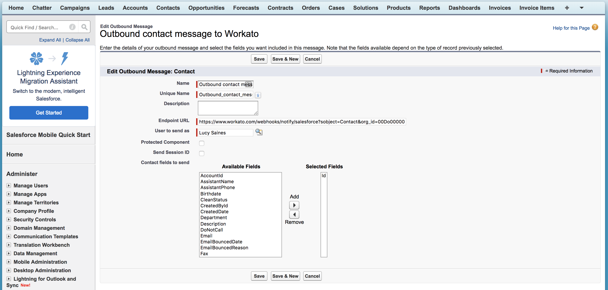 Setup outbound message using endpoint URL generated by recipe
9) Save the workflow rule and activate it.
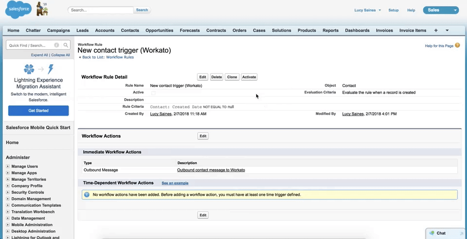 Activate workflow rule to start monitoring new contacts created in Salesforce
10) Return to Workato and start the recipe. To test that the recipe is working, create a new contact in your Salesforce instance. Check that the recipe picks up the trigger event immediately to verify that the workflow rule is working.
If the trigger event is indeed picked up immediately, this means that your workflow rule and Workato trigger has been set up properly. While the recipe is running, it should monitor newly created records in Salesforce and process them as trigger events immediately. If your workflow requires additional logic to filter out certain records, add trigger conditions.
Real-time trigger setup - new and updated object
We go through the setup for the New and updated object real-time trigger below. We will be setting up a real-time trigger for new and updated leads in Salesforce.
1) Select the trigger in Workato. You will be prompted to connect to your Salesforce account.
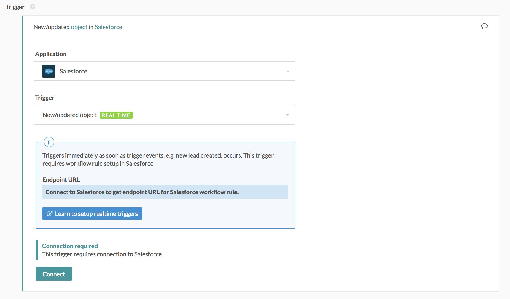 Select new and updated object real-time trigger in Salesforce
2) Connect to Salesforce.
3) Select the specific object you wish to monitor in Salesforce. In this case, we select Lead.
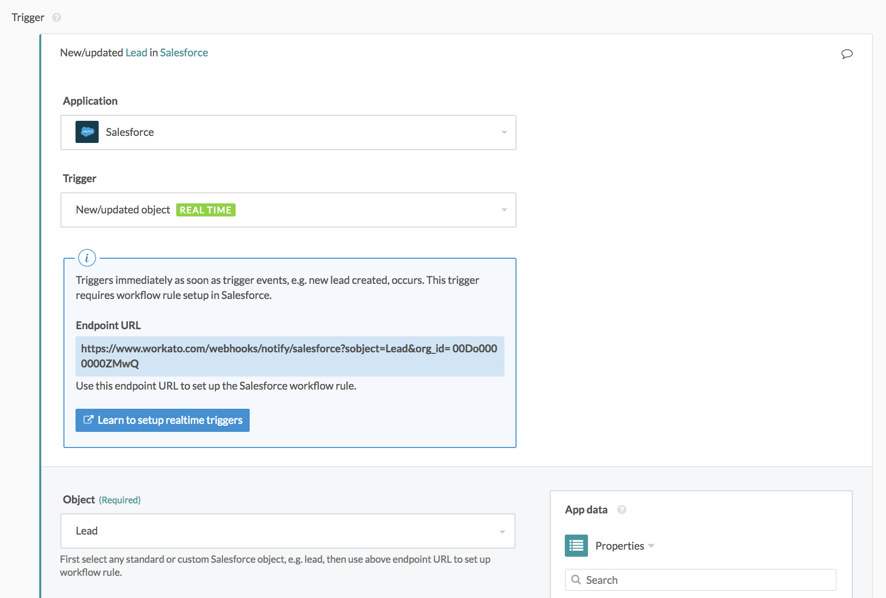 Select specific object to monitor in Salesforce
The trigger will provide you with an endpoint URL to setup a Salesforce workflow rule with. This URL will tell Salesforce to send real-time events about newly created or updated contacts to this Workato recipe. Copy this URL to the clipboard for use in creating the Salesforce workflow rule.
 Workato generates endpoint URL for Salesforce workflow rule
Workato generates endpoint URL for Salesforce workflow rule
This endpoint URL is unique to the Salesforce organization connected to the trigger, the Salesforce object you've selected, and the Workato recipe. You will need to regenerate this endpoint URL again if you decide to change Salesforce connection, the Salesforce object monitored, or the Workato recipe.
4) Go to your Salesforce organization and click on Setup. Go to Create > Workflow & Approvals > Workflow rules and click on New rule to create a new workflow rule. This will bring you into the Salesforce workflow rule setup wizard.
In your Salesforce organization, go to Setup>Create>Workflow & Approvals>Workflow rules and click on New rule
5) In step 1 of the setup wizard, select the same Salesforce object you have selected in the recipe.
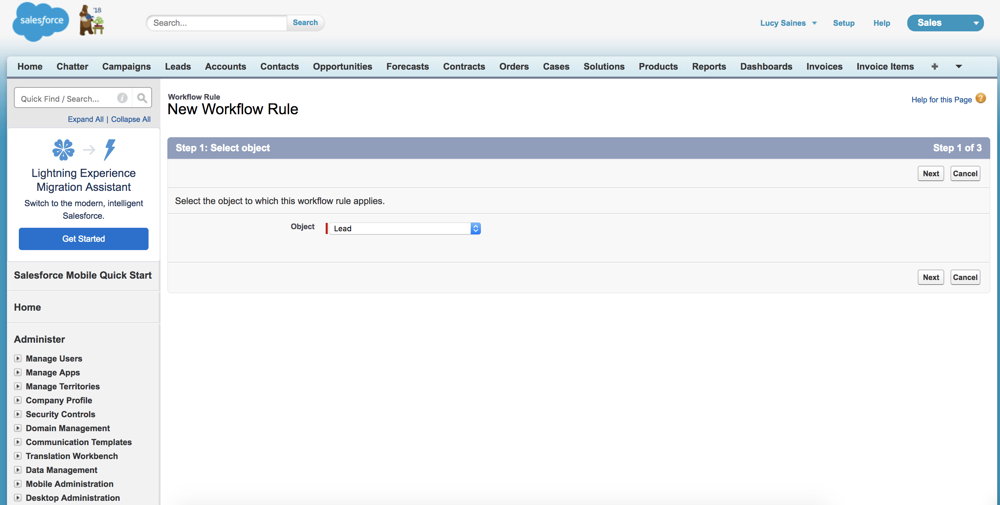 Select specific object to monitor in Salesforce
6) In step 2 of the setup wizard, set the workflow rule to be evaluated every time a record is created, and every time it's edited. We set the rule criteria to be Created Date not equal to null. Because no record will ever have a null date for the field Created Date, this ensures that the workflow rule will always be triggered when a record is created or updated.
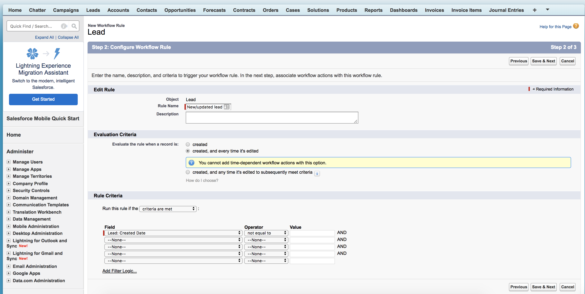 Setup the Salesforce workflow rule to be evaluated when record is created or updated
7) In step 3 of the setup wizard, add a workflow action "New outbound message". This ensures that Salesforce will always notify our Workato recipe whenever a record is created or updated, via sending an outbound message to that recipe's endpoint URL.
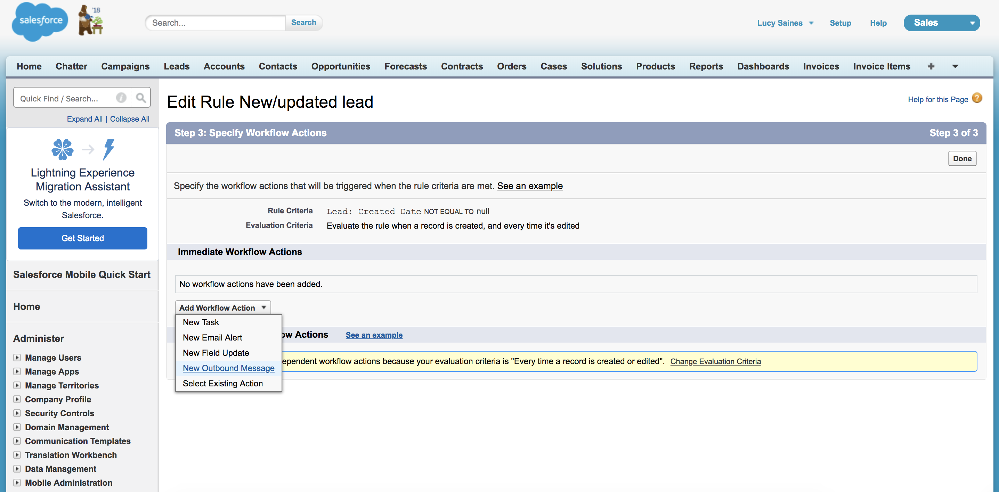 Add outbound message as the workflow action. Newly created or updated contacts that meet the evaluation criteria will send an outbound message
8) Set up the outbound message using the endpoint URL we copied in Step 3, and save it.
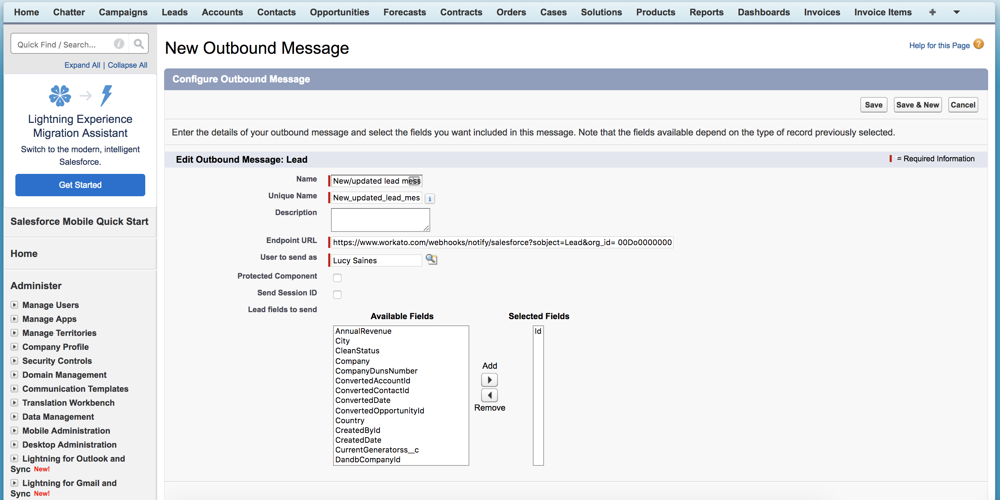 Setup outbound message using endpoint URL generated by recipe
9) Save the workflow rule and activate it.
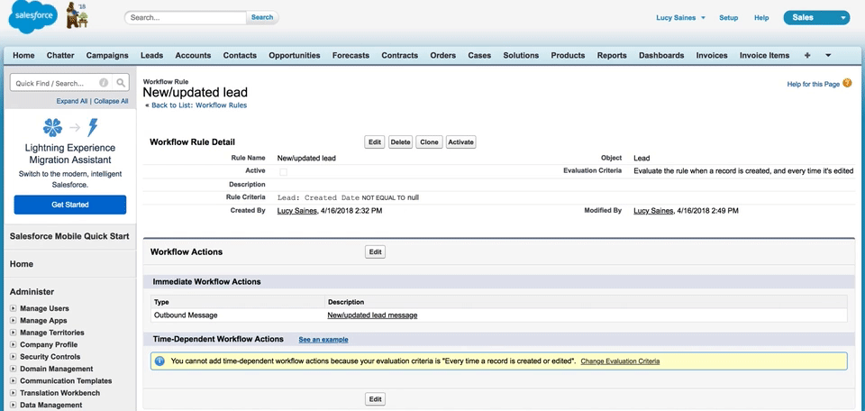 Activate workflow rule to start monitoring new leads created in Salesforce
10) Return to Workato and start the recipe. To test that the recipe is working, update a new object record. In this case, you should update an existing lead. Check that the recipe picks up the trigger event immediately to verify that the workflow rule is working.
If the trigger event is indeed picked up immediately, this means that your workflow rule and Workato trigger has been set up properly. While the recipe is running, it should monitor newly created or updated records in Salesforce and process them as trigger events immediately. If your workflow requires additional logic to filter out certain records, add trigger conditions.
Working with generic triggers in Salesforce
In Workato, a Trigger refers to a condition that is set to start off a recipe. All the triggers on the Salesforce connector deals with Objects. The name of the trigger tells you exactly what event must occur for a recipe to take place. The term "object" is exactly the same as how it is used within Salesforce itself, and refers to things such as leads, opportunities, accounts, as well as custom objects you may have created for your organisation. Simply click on the Object field's dropdown list and you will be able to see all the objects associated with the instance of Salesforce you have connected to a recipe. For example, you use the trigger "New Object" and select Lead as the object. Your recipe will trigger every time a new lead is created.
Working with generic create/update/search actions in Salesforce
When working with Salesforce Actions on Workato, you should find it extremely easy if you are familliar with the fields in the objects on your Salesforce account. When you select an object to use in a create/update/search action, you will see all the fields associated with that object appearing in your action. For example, if you were to choose Lead you will see fields like phone, email, lead status etc. Simply drag and drop pills into the associated fields you want to populate in a create/update action, or for the field you want to search with in the search action.
Working with attachments in Salesforce
Uploading
To upload an attachment to Salesforce using Workato, you can use the Create Object Action, and select Attachment under the Object field. Before that however, you need to have a step that downloads the file that is to be uploaded to Salesforce. You may use the Box action get file download URL, followed by using the utilities tool to upload it from the obtained URL, or a simillar flow of actions with another connector. You can check out this example here on how to download a file to Workato.
Downloading
To download an attachment from Salesforce, you can use the Download file Action. The file ID must be obtained from a previous step, usually from the Get object details step. Once that step is properly set up, you will be able to use the attachment as a pill in the other steps of the recipe, for example, you can use the Upload file action in the Box connector.
Working with SOQL in Salesforce
Salesforce Object Query Language (SOQL) is used to search your Salesforce data for specific information. SOQL syntax consists of a required SELECT statement which may be followed by a number of optional clauses (such as TYPEOF, WHERE, WITH, GROUP BY, etc.).
In a Workato recipe, the scheduled object query trigger will run SOQL queries with the following basic syntax: SELECT (list of fields) FROM (an object) WHERE (filter statements/sorting).
The recipe will automatically handle the SELECT FROM portion of your query. It will SELECT all fields FROM the object you choose from the pick list. For optional clauses, the trigger currently only supports WHERE conditions.
For a list of standard fields for major Salesforce objects, see: Salesforce Fields Reference.
Inputting SOQL WHERE Conditions (Syntax):
The WHERE clause follows field expression syntax. A fieldExpression is defined as follows: \
Comparison operators: Comparison operators include the following: =, !=, <, <=, >, >=, LIKE, IN, NOT IN, INCLUDES, and EXCLUDES. Here is a simple example following fieldExpression syntax:

For detailed information on how to use each comparison operator, see: Comparison Operators.
Logical operators: Multiple field expressions can be joined using logical operators. These include: AND, OR, and NOT. The basic syntax is as follows:
- fieldExpressionX AND fieldExpressionY
- fieldExpressionX OR fieldExpressionY
- NOT fieldExpressionX.
Here is an example showing two fieldExpressions joined by a logical operator:

For more information on logical operators, see: Logical Operators.
Working with bulk data load jobs in Salesforce
Salesforce supports capabilities for bulk data load. Workato uses the bulk API 2.0 to support the loading of data in bulk from a CSV file into Salesforce. Supported operations are:
- Create objects in bulk via CSV file
- Update objects in bulk via CSV file
- Upsert objects in bulk via CSV file
- Retry objects bulk job in Salesforce via CSV file
The difference between bulk load via CSV file actions and non-CSV file bulk actions are as follows.
| Bulk load via CSV file | Non-CSV bulk actions |
|---|---|
| Can process millions of records | Limited to 2k records per action |
| Does not support data transformation | Supports data transformation |
| Data is streamed only from CSV file into bulk action | Data can be from multiple sources into bulk action |
Create/update/upsert objects in bulk via CSV file
There are 4 main sections/components in these bulk actions.
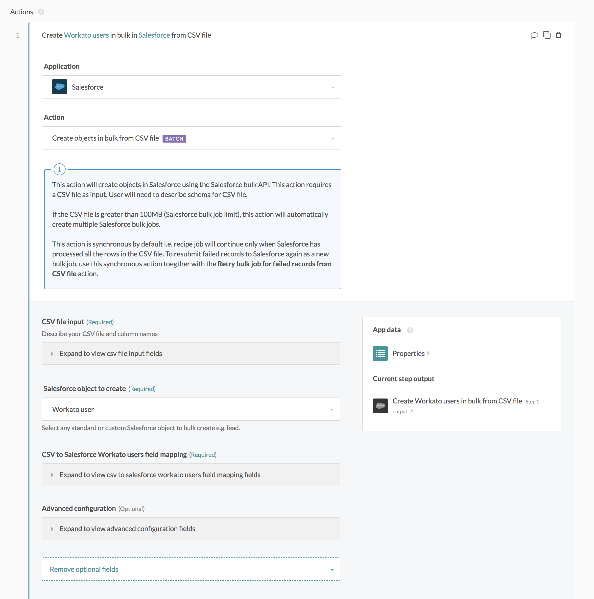 Salesforce bulk create via CSV file action sections
| Action section | Description |
|---|---|
| CSV file input | Define the schema of the CSV files containing Salesforce bulk load data. |
| Salesforce object to create/update/upsert | Define the Salesforce object to write to, as well as External ID for upsert operation. |
| CSV to Salesforce field mapping | Describe how the CSV data columns should map into Salesforce object fields. |
| Advanced configuration | Define the size per Salesforce bulk job. Define whether this action should be synchronous or asynchronous. |
Let's go into each section in detail.
CSV file input
In this section, define the schema of the CSV files containing Salesforce bulk load data. This enables Workato to read and extract data from your CSV files and move it into Salesforce accurately. These are the fields to fill in:
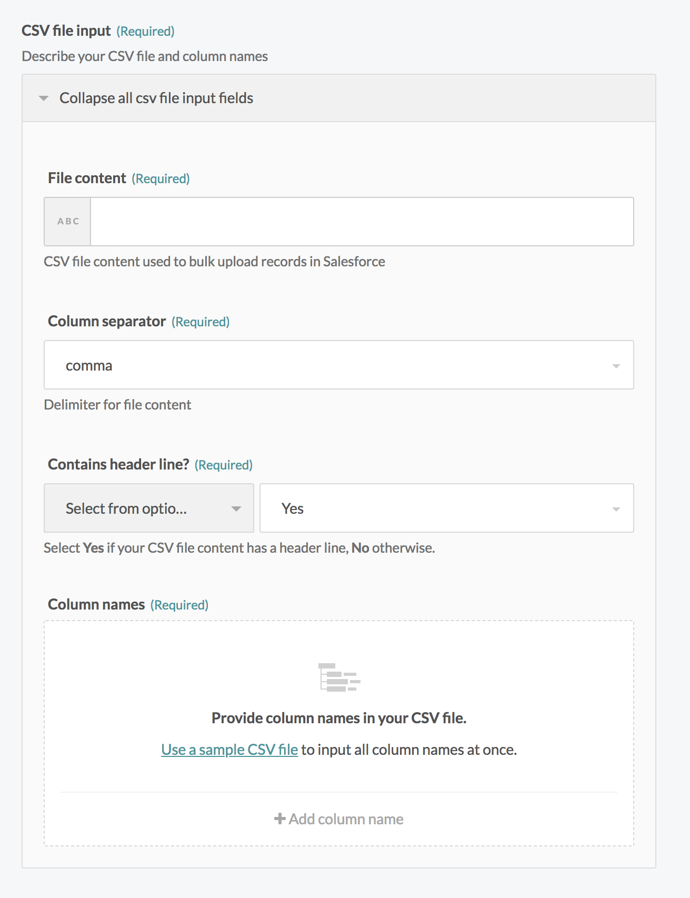 Salesforce bulk action - unconfigured CSV file input section
| Input field | Description |
|---|---|
| File content | Provide the CSV file content here. This would typically be a datapill from a Download file action or from a New file trigger. |
| Column separator | Describe the delimiter of your file - this can be comma, tab, colon, pipe or space. |
| Contains header line? | Describe whether the CSV file content you're providing contains a header line or not. This will tell Workato whether to skip the first line for processing, because we don't want to inaccurately process header lines as data. |
| Columns names | Describe the names of the data columns in your CSV file. This will be used to generate the available CSV data for mapping into Salesforce in the CSV to Salesforce field mapping section. |
This is how the section should look after configuration.
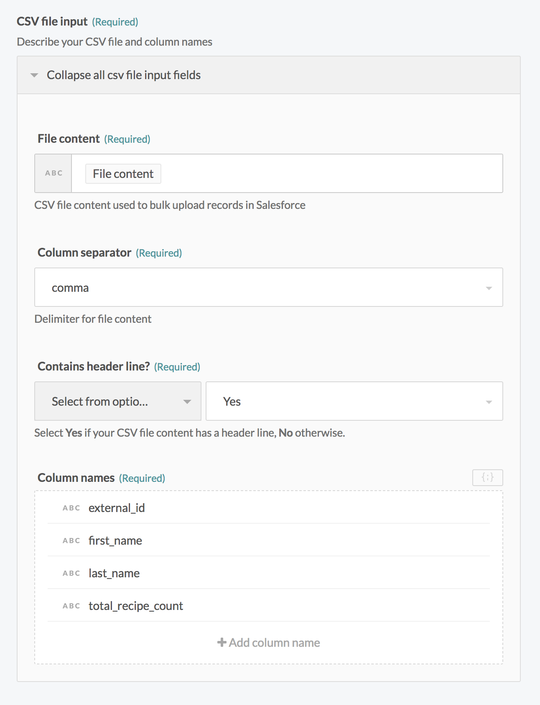 Salesforce bulk action - configured CSV file input section
In our example, we used the sample CSV file below.
external_id,first_name,last_name,total_recipe_count
"a0K1h000003fXSS","Jenna","Minnes","54"
"a0K1h000003fehx","Kathrine","Lecompte","12"
"a0K1h000003fjnv","Mariela","Fester","28"
Salesforce object to create/update/upsert
For the create and update operations, select the Salesforce object you wish to write to.
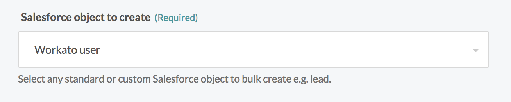 Salesforce bulk create action - configured Salesforce object section
For the upsert operations, select the Salesforce object you wish to write to as well as the external ID field of the object. In order to carry out the bulk upsert action, your Salesforce object must have an external ID field.
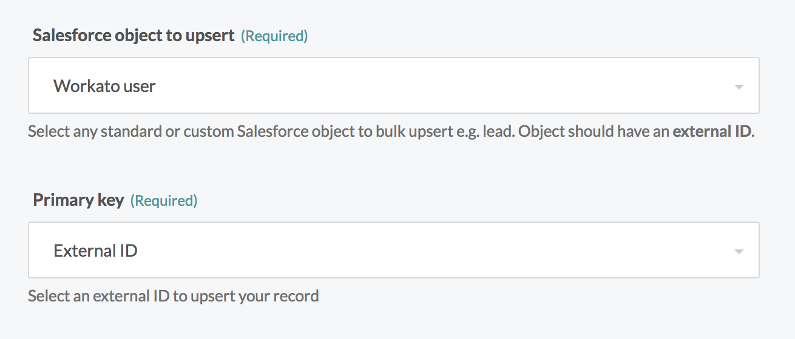 Salesforce bulk upsert action - configured Salesforce object section
CSV to Salesforce field mapping
In this section, describe how your data should flow from the CSV file into the Salesforce object. The input fields are generated from your selection of Salesforce object to create/update/upsert, while the picklist is generated from your CSV column names in the CSV file input section.
When unconfigured, this section will not map any data into Salesforce.
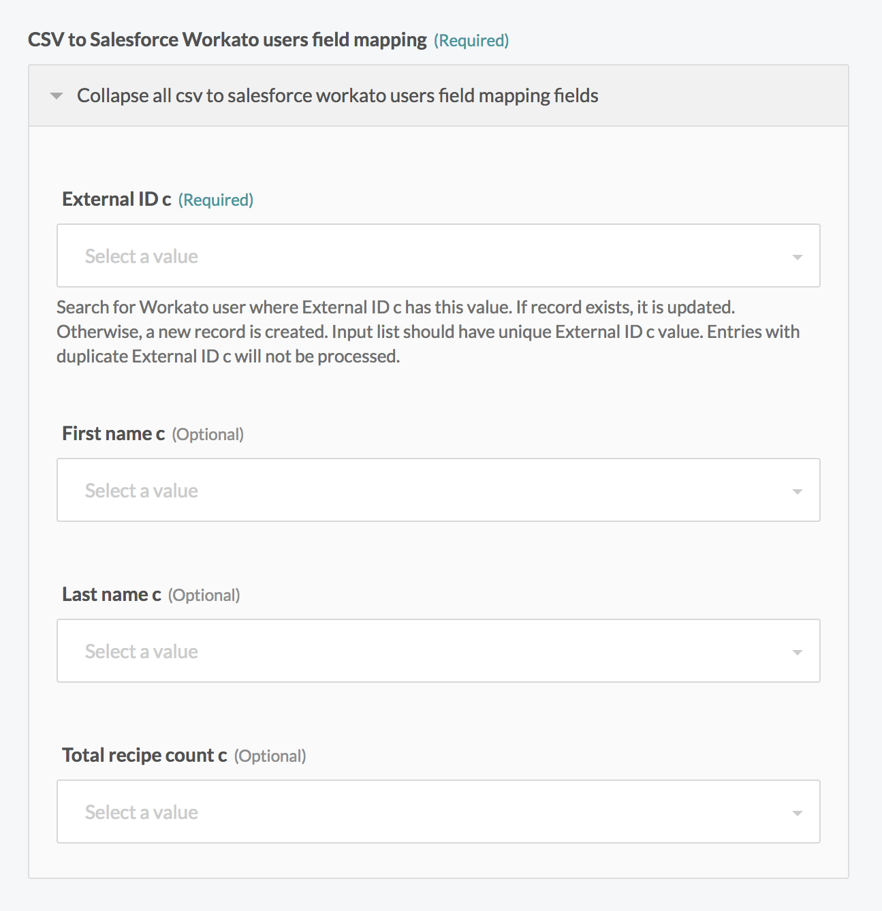 Salesforce bulk upsert action - unconfigured fields mapping section
For each field that you wish to write to in Salesforce, select which column of the CSV file the data should come from. This action does not allow datapills or data transformation via formula mode as it streams the CSV file data into Salesforce.
This is how the section should look after configuration.
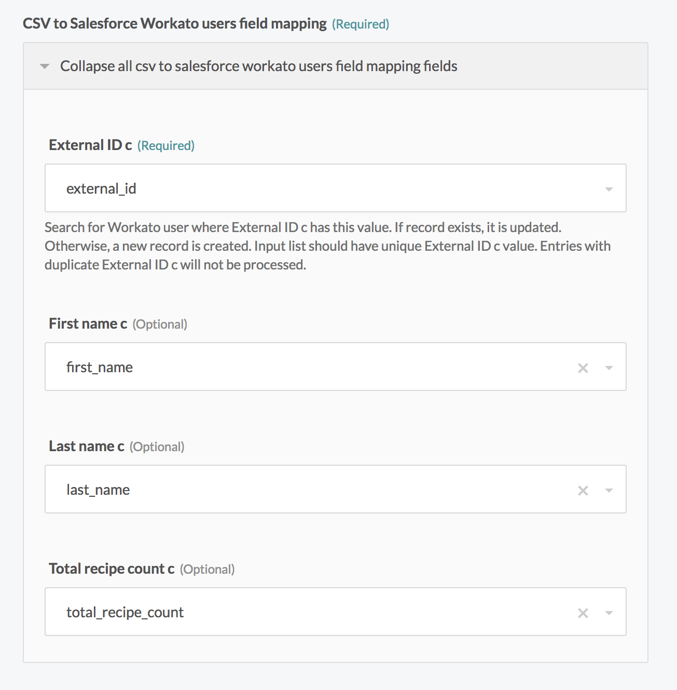 Salesforce bulk upsert action - configured fields mapping section
Advanced configuration
In this section, define whether the action should be synchronous or asynchronous. If synchronous, Workato waits for Salesforce to complete the bulk job processing before moving to the next recipe action. If asynchronous, Workato simply uploads the CSV file content into Salesforce and move to the next recipe action without waiting for Salesforce to complete the bulk job processing.
You can also define the size of the CSV file chunk per Salesforce bulk job. This defaults to 10MB.
Understanding the output datatree
The bulk operation's output datatree contains the following.
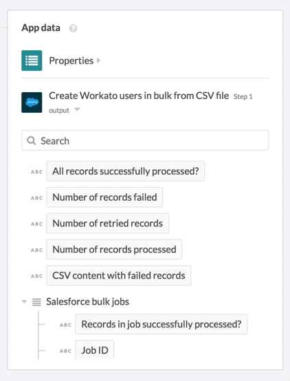 Salesforce bulk operation output datatree
| Output datapill | Description | |
|---|---|---|
| All records successfully processed? | True if all CSV rows across Salesforce bulk jobs are processed successfully. False if any CSV rows across Salesforce bulk jobs failed. | |
| Number of records failed | Total number of CSV rows that failed to be successfully processed in Salesforce. | |
| Number of retried records | Total number of CSV rows that were retried to be processed in Salesforce. Only relevant for the retry action. | |
| Number of records processed | Total number of CSV rows that were processed in total by Salesforce (failed + succeeded). | |
| CSV content with failed records | CSV file content containing CSV rows in the original API request which failed to be successfully processed. 2 additional columns are added to this CSV file - **sf__Error** and **sf__Id**. Refer to the Salesforce documentation for more information. | |
| Salesforce bulk jobs | If CSV file is large, Workato will split the CSV file into chunks and process them as separate Salesforce bulk jobs in order to comply with Salesforce API size limits. Each bulk job in the list will have the following data. |
|
| Job ID | Internal Salesforce ID of the Salesforce bulk job created | |
| Number of records failed | Number of records failed to be processed successfully by Salesforce | |
| Number of records processed | Number of records processed in total by Salesforce (i.e. number of rows in CSV file excluding header row) | |
| List size | Synthetic field that tells us how many Salesforce bulk jobs were created in total | |
The aggregated results across bulk jobs can be found at the top of the datatree.
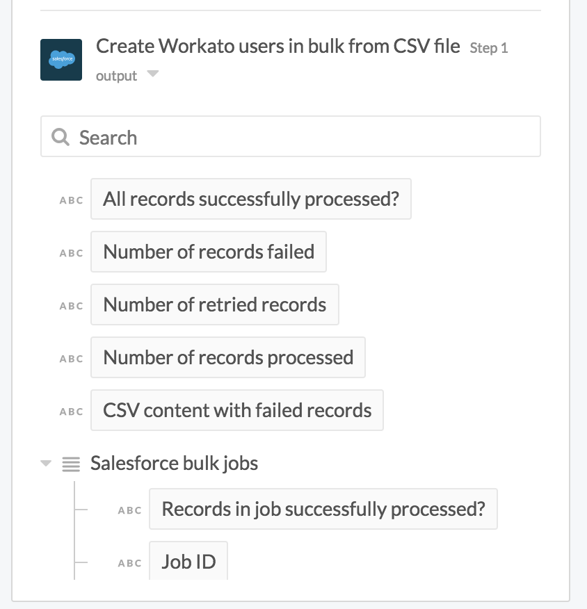 Salesforce bulk operation output datatree - aggregated results across bulk jobs
The list of Salesforce bulk jobs can be found at the bottom of the datatree.
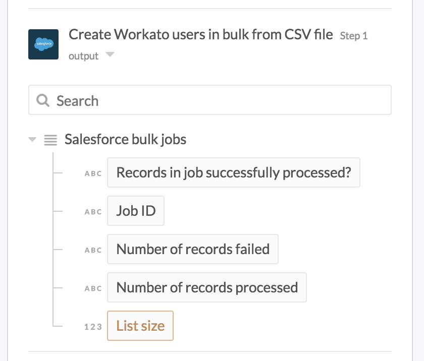 Salesforce bulk operation output datatree - list of bulk jobs
Retry bulk job for failed records from CSV file
The retry action has a single input field CSV content with failed records that expects the CSV content with failed records datapill from a previous Salesforce bulk operation action. By passing that CSV content in, Workato will understand the previous configuration you have done (i.e. what your CSV file looks like, what Salesforce object to write to and how the CSV data should be mapped into Salesforce fields).
The retry action is synchronous. This means that the recipe will only continue to the next action when Salesforce has finished processing all CSV rows into Salesforce.
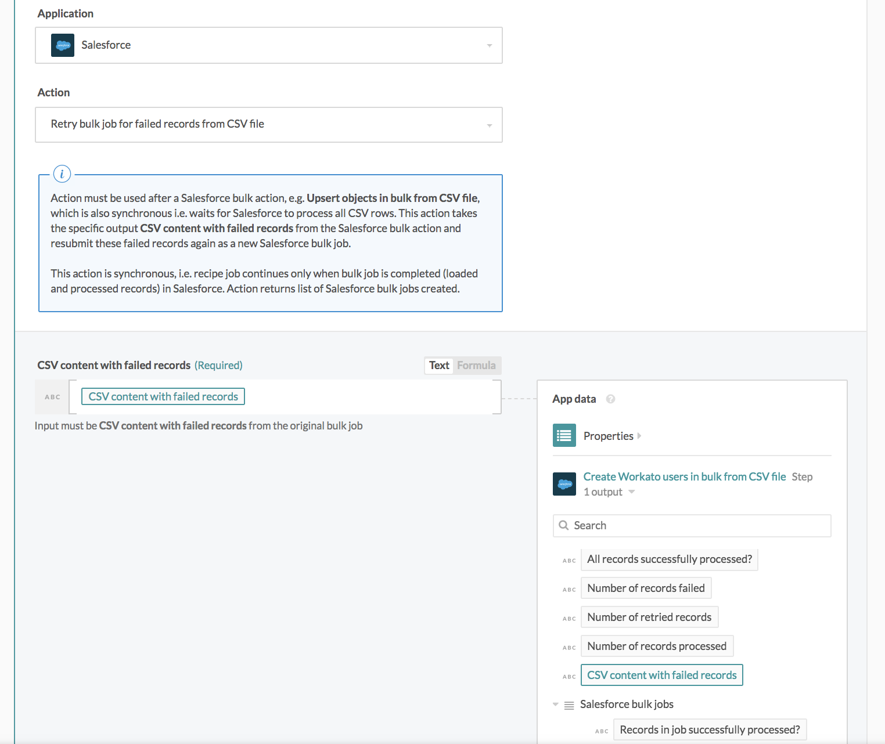 Configured Salesforce bulk retry action
Example recipe
Let's go through an example recipe using the bulk upsert via CSV file action as well as the retry bulk job action.
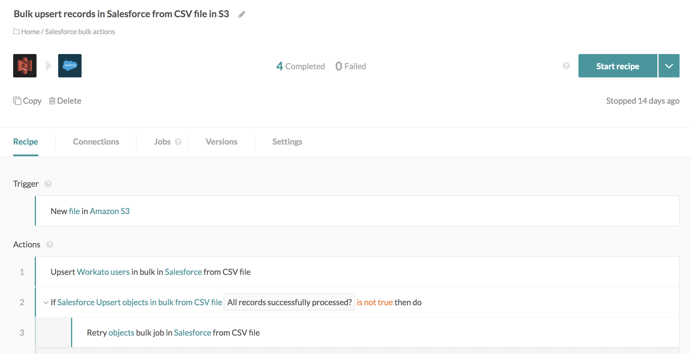 Sample recipe - Salesforce bulk upsert via CSV file. Example recipe
The S3 trigger monitors new CSV files dropped into an S3 bucket, and we stream the data from the CSV file into Salesforce via the Upsert objects in bulk via CSV file Salesforce action. If this upsert operation is not fully successful, i.e. at least 1 CSV row did not get written into Salesforce successfully, we use the Retry objects bulk job in Salesforce via CSV file action to attempt to write the failed CSV rows into Salesforce again.
The Salesforce actions Upsert objects in bulk via CSV file and Retry objects bulk job in Salesforce via CSV file will manage large files for you. For large CSV files over a couple of GBs in size, Workato will chunk the CSV file into sizes under the Salesforce bulk API size limits and create multiple Salesforce bulk jobs.
The CSV file we use is as follows.
external_id,first_name,last_name,total_recipe_count
"a0K1h000003fXSS","Jenna","Minnes","54"
"a0K1h000003fehx","Kathrine","Lecompte","12"
"a0K1h000003fjnv","Mariela","Fester","28"
Here is the configured bulk upsert action.
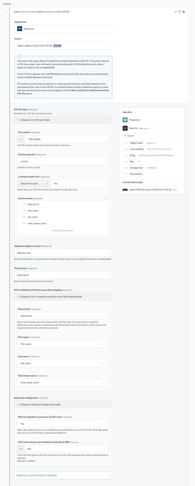 Configured Salesforce bulk upsert action
Subsequently, the recipe checks to see if any records failed to be processed successfully by Salesforce. this could be due to many reasons such as:
- data errors
- records were locked as someone else/another process was editing them
- network issues
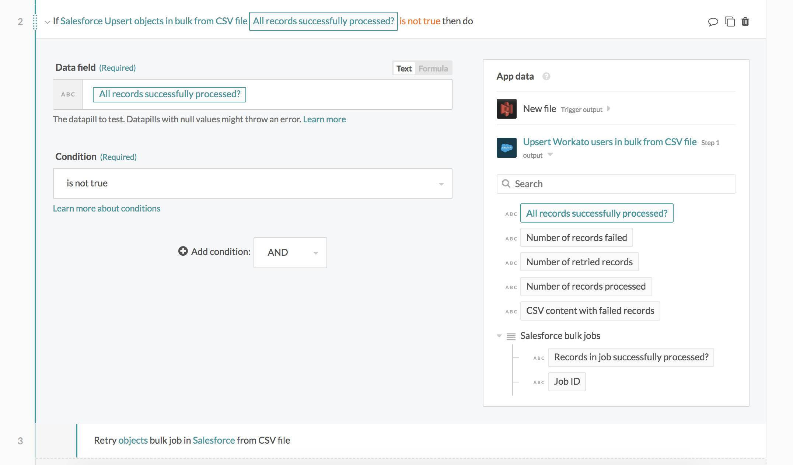 If condition checking for any failed records
If any records failed, All records successfully processed? will be false, and the recipe will proceed to carry out the retry action.
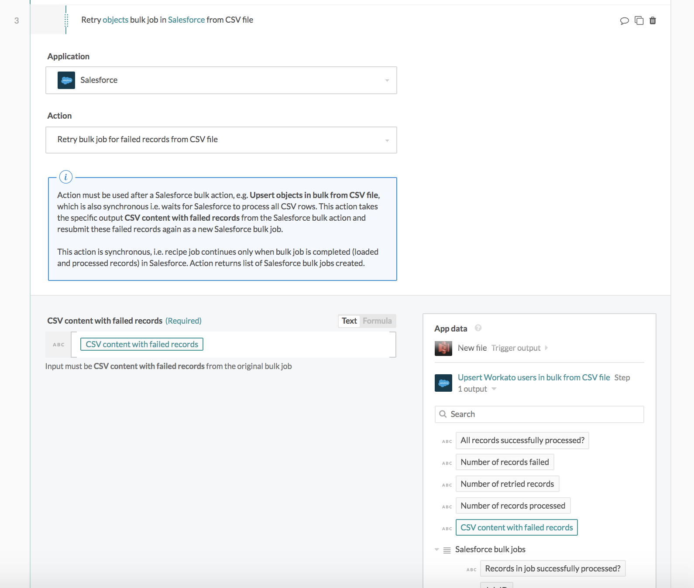 Configured retry bulk operation action
Date formats and date literals:
To filter on date fields in a query, you must use Date only format. The syntax for this is: YYYY-MM-DD. To filter on dateTime fields in a query, you must use the format including: date, time, and time zone offset. There are three possible syntax formats for this:
- YYYY-MM-DDThh:mm:ss+hh:mm
- YYYY-MM-DDThh:mm:ss-hh:mm
- YYYY-MM-DDThh:mm:ssZ.
In order to query a date or dateTime field, you may need to turn on formula mode if you are not using it already. This is needed to convert your timestamp to the ISO8601 format expected in SOQL. Also note that you do not need to use single quotes around date or dateTime values. For date fields, add ‘.to_date’ to the end of your date formula to convert your date or timestamp to the correct format.


For dateTime fields, the third syntax format is the simplest to use. After entering the formula to get your desired timestamp (eg: now, 2.weeks.ago.beginning_of_day, etc.), add ‘.strftime("%Y-%m-%dT%H:%M:%S%z")’ to the end of it.

For more information on date formats and date literals, see: Date Formats and Date Literals
For additional help, see Salesforce documentation
Prevent schema errors with Fields list
When using a Salesforce trigger/action in a recipe, all object fields (standard and custom fields) are requested from Salesforce by default, even if these fields are not used in the recipe.
If a Salesforce admin changes the Salesforce object schema, e.g. deletes fields in the object, the recipe throws an error when making API requests to Salesforce for that object. This is because these deleted fields are still being requested from Salesforce by the recipe, which is an invalid request. On the other hand, if fields are added to the Salesforce object, there will not be any recipe errors as Workato will simply not request for these additional fields.
Such schema differences between Salesforce and Workato can be resolved by a schema refresh. However, if frequent schema changes are expected, we can utilize the Fields input field to control the fields that we request from Salesforce. This will ensure that schema changes unrelated to the recipe will not cause the recipe to break or experience errors.
Fields list
The Fields list input field allows users to select the fields they wish to use in the recipe. This ensures that the recipe will be affected only by changes to these subset of fields, and therefore minimize impact on the recipe due to schema changes.
The benefits of using the Fields list are:
- Improved recipe performance
- Improved recipe usability due to smaller datatree with only relevant datapills
- Minimizes impact on recipe by Salesforce object schema changes
How to use Fields list
Salesforce triggers and actions have an optional input field called Fields. This is a multiselect field for you to select the data fields you want to use in the recipe. If left blank, the Salesforce trigger/action will retrieve all data fields in the datatree by default.
 Unconfigured fields selector. All account data fields are retrieved in the datatree by default.
Unconfigured fields selector. All account data fields are retrieved in the datatree by default.
All data fields of your selected object will be available in the Fields list.
 Fields selector displays all available data fields for your selected object by default
Fields selector displays all available data fields for your selected object by default
By selecting any subset of these fields, the datatree will be regenerated to display only the selected datapills.
 Configuring the fields selector - the datatree is regenerated when any fields are selected
Configuring the fields selector - the datatree is regenerated when any fields are selected
In Salesforce, you can choose to retrieve related objects' data as well, e.g. if your trigger is a new opportunity in Salesforce, we can retrieve data about the Salesforce account the opportunity is related to. If your trigger is a new case, we can retrieve data about the Salesforce contact, lead or account the opportunity is related to. To tell Workato the fields to select, first select the related objects you're interested in, then select the fields of this related obect you're interested in.
In the following example, we first selected account as the primary base object, then parent account as the join object. The Fields multiselect list is promptly populated with fields belonging to the parent account as well. Similarly, if the Fields list is not configured, all account and parent accountfields will be fetched from Salesforce.
 Available join object fields will be shown when the related join objects is selected
Available join object fields will be shown when the related join objects is selected
All data fields of your selected base and related join objects will be available in the Fields list. By selecting any subset of these fields, the datatree will be regenerated to display only the selected datapills.
 Configuring the fields selector containing base and related join object data fields - the datatree is regenerated when any fields are selected
Configuring the fields selector containing base and related join object data fields - the datatree is regenerated when any fields are selected
By limiting the datatree to only the fields we're interested in using, we mitigate the effects of Salesforce schema changes on our recipe.
Best practices
When starting to use Workato with your Salesforce account, we reccomend that you either do it on a sandbox account, or test on non-essential pieces of data. This would prevent any loss of crucial data, especially since actions performed through Workato cannot be undone.
Working with sandboxes on Workato
Salesforce sandboxes are isolated from your Salesforce production organization, so operations that you perform in your sandboxes don’t affect your Salesforce production organization, and conversely. Sandboxes are nearly identical to your Salesforce production organization. For a list of differences, see Sandbox Setup Tips and Considerations.
Troubleshooting
Here is a list of common errors that you may encounter, and links to how to rectify them.